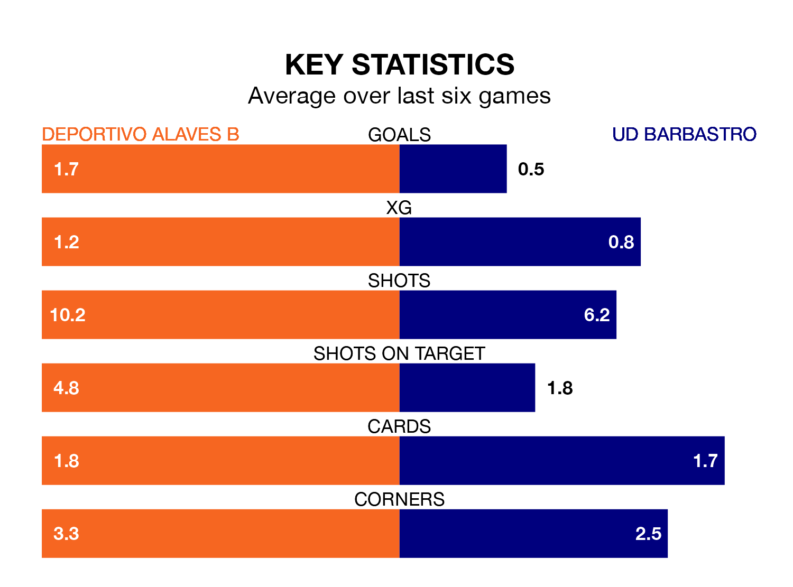

Deportivo Alaves B are heavy favourites to keep all three points at home in Sunday's early kick-off against UD Barbastro.
Deportivo Alaves B, who sit fifth in the Segunda División RFEF Group 2 with 23 games played, are priced at 1.2 to seal victory at Ciudad Deportiva José Luis Compañón.
Sitting three places and nine points behind them in the table, Barbastro are 17.0 to win with *Betting Company*, while the draw is at 4.6.
With 40 goals in 23 games so far this season, Deportivo Alaves B are the league's third-highest scorers with 1.7 goals per game. And they are conceding at an average rate, letting in 25 goals at a rate of 1.1 per game.
Barbastro, meanwhile, are below average scorers, with 0.8 goals per game, compared to a league average of 1.1. They have conceded 0.9 goals per game.
The home side are in mixed form in the Segunda División RFEF Group 2, with two wins and a draw from their last six games.
With two wins and two draws over that period, the visitors' form is slightly better – they have taken eight points from 18, compared to Deportivo Alaves B's seven.
Deportivo Alaves B's last match was on February 18, a 2-1 loss against Athletic Club B, with Unai Ropero getting the goal for Deportivo Alaves B.
Barbastro beat CD Valle Egüés 1-0 last time out, also on Sunday, with Jaime Reques Vegas on the scoresheet.
Updated: 10:08 (UTC), 23/02/24